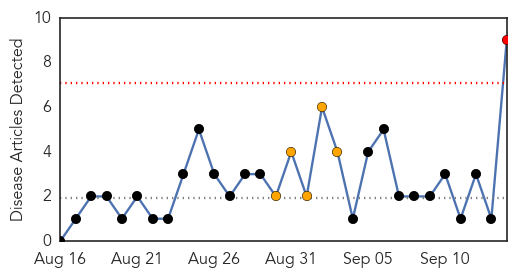
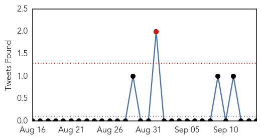
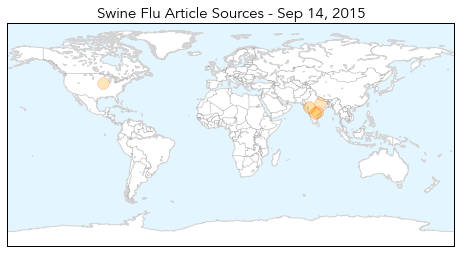
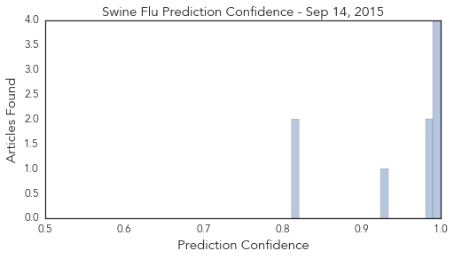

Pertussis
30-Day Web Trend
0 alerts, 0 warnings

30-Day Twitter Trend
0 alerts, 0 warnings

Article Locations

Article Confidences

Top Articles:
Top Tweets:
-
No tweets found for Sep 14, 2015
Swine Flu
30-Day Web Trend
1 alerts, 5 warnings

30-Day Twitter Trend
1 alerts, 0 warnings

Article Locations
Article Confidences
Top Articles:
- 0.999
- 3 more persons from Vadodara confirmed with swine flu virus
- 0.999
- DAK cautions against H1N1 outbreak
- 0.998
- DAK cautions against H1N1 outbreak
- 0.994
- Doctors Association Kashmir (DAK) sounds swine flu alert in valley
- 0.989
- 2 More Succumb to Swine Flu
- 0.989
- DAK cautions against H1N1 outbreak, Issues advisory on vaccination
- 0.931
- TS Govt confirms two Swine Flu deaths
- 0.817
- Swine Flu Claims Two More Lives
- 0.811
- News, Weather, Sports, Breaking News
Top Tweets:
-
No tweets found for Sep 14, 2015